uniCenta-style Till & Kitchen Screen — User Guide (SQLite, local-first)¶
⚠ DEMONSTRATOR — NOT OFFICIAL. Every screenshot in this guide is taken on the GardenWorld demo tenant with demo products and demo prices. Treat every figure as a sample (
SAMPLE — NOT OFFICIAL), not as a certified point-of-sale or accounting system.
What this is. A cash-register screen that looks and behaves like uniCenta oPOS 5.0, so a cashier who knew uniCenta needs no new learning, running on the same SQLite twin of iDempiere as the rest of Kernel-ERP. It is a separate page, not a pill inside the ERP. It runs on the till's own browser, with no server, and it keeps working when the connection drops.
The till deposits; it never completes. Each sale is written on the till as import rows (
I_Orderlines andI_Paymenttenders — the same legacy import tables iDempiere has). At Close Cash the till hands its shift to its branch POS admin, which sends the whole branch to head office once, at end of day (EODA). Head office later turns the rows into orders, invoices and receipts. The till itself writes no order, shipment, invoice, payment or posting, and it never talks to head office directly.
Live pages (the demo site):
- Till: https://red1oon.github.io/bim-ootb/erp/till.html
- Kitchen screen: https://red1oon.github.io/bim-ootb/erp/kitchen.html
- Branch POS admin: https://red1oon.github.io/bim-ootb/erp/branch_admin.html
Related guides: Kernel-ERP User Guide · Kernel-ERP — Your First Setup · Distributed ERP.
This is a task-oriented manual. Cashier: read If you know uniCenta 5, Ringing a sale and The kitchen. Branch manager: read Setting up a till and a kitchen screen, Configuration, Shifts and Close Cash and The branch POS admin. Head-office clerk: read Head office. Everyone: Troubleshooting at the end.
If you know uniCenta 5¶
The 25 things a uniCenta 5.0 cashier (and manager) does, and where each one is here. Labels are uniCenta's own. The till's own parity check passes 25 of 25 rows (till_registry.js, rows 1-25).
| # | In uniCenta 5 | Here | What differs, and why |
|---|---|---|---|
| 1 | Login (user button / card) | Login screen: one button per active user of the tenant | You tap a name. There is no card or password step on this till. |
| 2 | Register menu: Sales, Edit Sales, Customer Payment, Payments, Close Cash | Same five buttons, in that order | Three more buttons follow them: Check In/Out, Voucher, Pickup Reset. |
| 3 | Sales screen | Sales screen, same six regions | Scale, Mooring, Split Sale, Customer, Search product, Edit line, Choose attributes and Check Stock are shown greyed out ("not in this release", with the reason as a tooltip). |
| 4 | Number pad | Same pad and same grammar (3 then a product = 3 units, n*, +/- on the selected line, = to pay) |
Re-read against uniCenta 5.0, not 3.81: on a refund ticket +/- add −1, and n - no longer makes the price negative. |
| 5 | Catalog: categories, sub-categories, product tiles | Same, tiles 107 x 60, now with the product picture and the name and price over its bottom | Tiles are the products that have a price on the till's price list, sorted by product key. A product with no picture shows a grey "no image" mark. See Product pictures. |
| 6 | Ticket button bar | Total discount, Line discount, Print preview, Open drawer, Virtual Keyboard | Refund item, Service charge, Line note, Set person are not on the bar, as in uniCenta 5.0's default (they are commented out there). |
| 7 | Shared tickets | Add New Ticket, Tickets awaiting completion, Delete, Reprint Ticket, Quick LogOff | — |
| 8 | Payment dialog, 8 tenders | Tabs Cash, Cheque, Voucher, Card, Free, Debt, Bank, Slip; Add / Delete Part Payment; Print Receipt | Voucher, Free, Debt and Slip are disabled. Legacy iDempiere has no payment tender type for them, and the till may only send what legacy can import. Cash, Cheque, Card, Bank are live. |
| 9 | Receipt and change pop-up | Receipt screen (uniCenta's 42-column ticket), Change pop-up | Card: you key the terminal's reference and approval code; the card number is never typed or stored. |
| 10 | Edit Sales | Edit Sales | Edit is allowed only on a sale of the open shift that has not been refunded or sent to head office. |
| 11 | Refund | Edit Sales → Refund | Tabs Refund, Cheque, Voucher (disabled), Card. |
| 12 | Customer Payment | Customer Payment | Tabs Cash, Cheque, Voucher (disabled), Bank, Card, Slip (disabled). The till writes no debt of its own. |
| 13 | Payments (cash in / out) | Payments | Stays on the till (see What never leaves the till). |
| 14 | Close Cash (Z), Print, reprint a past Z | Close Cash, Print, Reprint a past Z | No counted-cash box — uniCenta 5.0 has none either. The Z goes to the branch POS admin, not to head office. |
| 15 | Send Order (remote printer) | Send Order → the kitchen screen | uniCenta's remote display has no states and nothing comes back. Here the kitchen can mark done / void and the cashier sees it. |
| 16 | Restaurant map | till.html?mode=restaurant (or Tickets = restaurant in Configuration) → floor map |
Floors and tables come from the branch POS admin; until it sets any, uniCenta's own seed floor of 24 tables is shown. |
| 17 | Reservations | Reservations (restaurant mode) | The table is chosen at check-in, not when booking. |
| 18 | Reprint Last Ticket | Reprint Last Ticket | — |
| 19 | Voucher issue / redeem | Voucher screen | A till-local ledger only. The Voucher tender tab stays disabled. |
| 20 | (none in uniCenta) | Kitchen screen | New: a separate page with waiting / done / void, Recall, changed-line marks and a Ready notice back to the till. |
| 21 | Check In / Check Out | Check In/Out | — |
| 22 | Pick-up number reset | Pickup Reset | — |
| 23 | Configuration: General, Locale, System Options, Ticket Setup, Company | Configuration (gear button on the status strip) | Only the 50 settings that apply to a browser till (49 of uniCenta's plus Look and Feel) are shown; hardware, Swing and database settings are left out. |
| 24 | Tickets mode: simple / standard / restaurant | Configuration → General → Tickets | The choice applies at the next start. |
| 25 | Floor tabs over the shared table map | Floor tabs on the restaurant map | Open tables are shared by every till of the branch, with a lock; a table is saved when the waiter leaves it. |
| 26 | Look and Feel (theme) | Configuration → General → Look and Feel | uniCenta's Look and Feel choice, as two themes: Classic (2011), the default, and Modern. Applies when you press Save. |
| 27 | About | About in the left menu panel (System) | The company logo and details, then the application name and version. |
| 28 | Left collapsible menu panel | the panel at the left of the Sales screen | Main, Administration and System sections; the ‹ button hides it. |
Getting started (for the cashier)¶
- Open the till page — https://red1oon.github.io/bim-ootb/erp/till.html. The strip at the top shows Till, online/offline, paired / not paired, who is signed in, deposited N, and a Visit head office button.
- Tap your name.
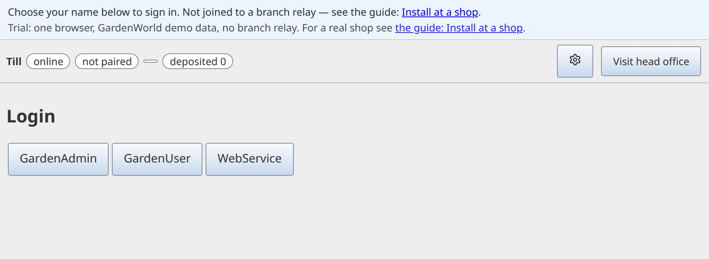
- Pick a panel on the Register menu: Sales, Edit Sales, Customer Payment, Payments, Close Cash, and below them Check In/Out, Voucher, Pickup Reset.
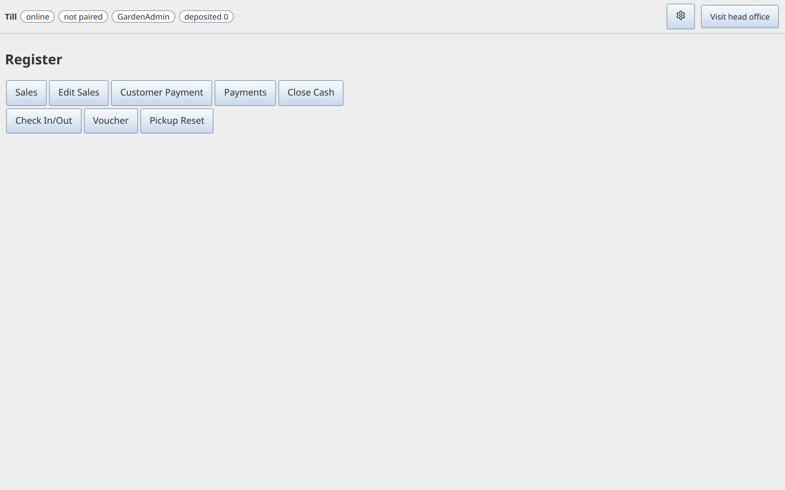
- Tap Sales. Pick a category, then tap product tiles. The back arrow returns to the parent category.
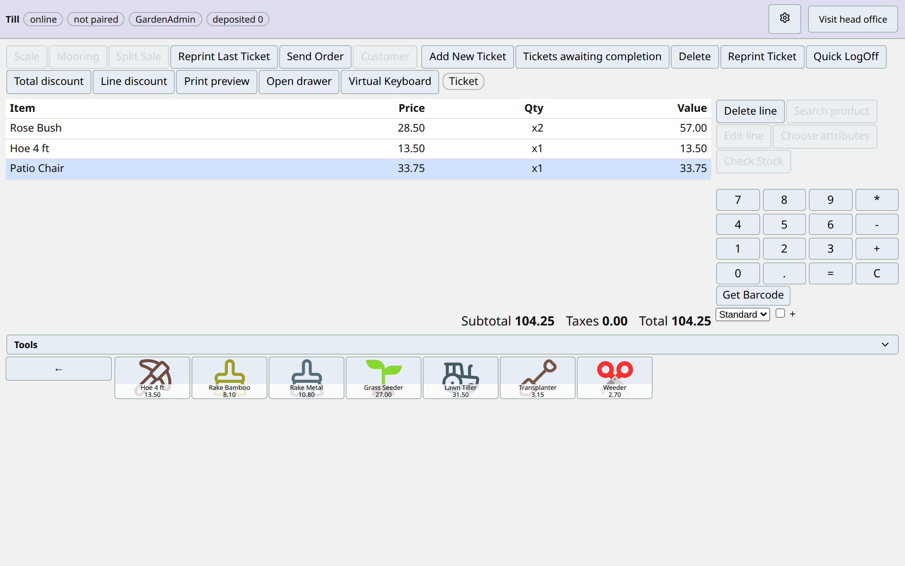
The look is the original 2011 screen: pale grey window, blue-grey buttons, white fields, a light-blue selected line, blue number keys. The menu panel at the left has three sections, Main (Sales, Edit Sales, Customer Payment, Payments, Close Cash), Administration (Check In/Out, Voucher, Pickup Reset) and System (Configuration, About). The ‹ button at its top hides the panel (the ticket takes the room) and › brings it back; the choice is remembered on this till. On a phone-width screen the panel is not shown.
The screen is laid out as uniCenta's: buttons across the top, the ticket in the middle (it takes whatever height is left), and the catalog at the bottom at the category panel height set at the branch admin (320 px by default). Product tiles are 107 x 60 with the picture and the name and price over its bottom edge. The thin bar above the tiles shows the open category; press it to fold the catalog away (the ticket grows into the space) and press it again to bring the products back. The choice is remembered on this till.
Sample sale on the GardenWorld demo tenant: 1 x Patio Chair 33.75, 1 x Hoe 4 ft 13.50, 2 x Rose Bush 57.00 — Subtotal 104.25, Taxes 0.00, Total 104.25 (the demo tax rate is 0 %). The arrow button at the bottom left goes back to the category tiles:
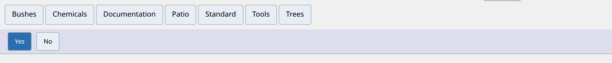
Common tasks¶
Ringing a sale¶
- On Sales, tap a product tile: one unit is added. Tap it again and the line's quantity goes up (the same product is merged into its line, as in uniCenta).
- For several units, type the number on the pad first (
3), then tap the tile: three units. - Tap a line to select it. On the pad,
+adds one unit,-takes one away (a sale line at zero is removed), andn*then+sets the line to n units. C clears the pad. Delete line removes the selected line. - A typed barcode followed by Enter (or Get Barcode) adds the product with that barcode or product key. An unknown code answers "code - no such product".
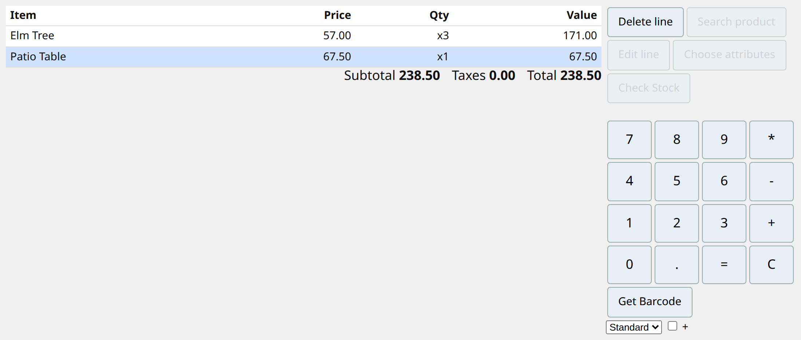
- Totals (Subtotal, Taxes, Total) are worked out with the ERP's own tax functions, so they equal what head office will import.
Discounts¶
- Select the line. Type the percentage on the pad as digits:
10means 10 %. - Line discount inserts a negative "Line Discount 10%" line under the selected line. Total discount lowers the price of every line by that percentage.
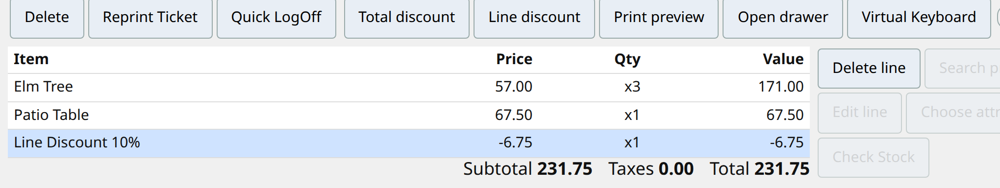
- If the discounted price would fall below the price list's price limit, the till refuses it first, because head office would refuse the ticket anyway.
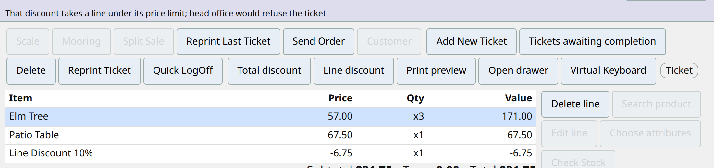
Taking payment¶
- Press = on the pad (or the space key). With no lines on the ticket the till just beeps.
- The Payment dialog opens with the total and what remains. Voucher, Free, Debt and Slip are greyed.
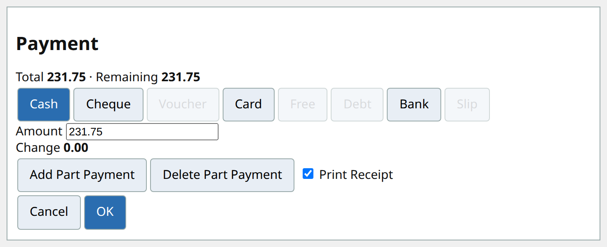
- For a split tender: choose a tab, type the amount, tap Add Part Payment. For Card, key the Terminal ref and Approval code from the card terminal first. Only Cash may be more than what remains (the extra is change). Delete Part Payment removes the last part.
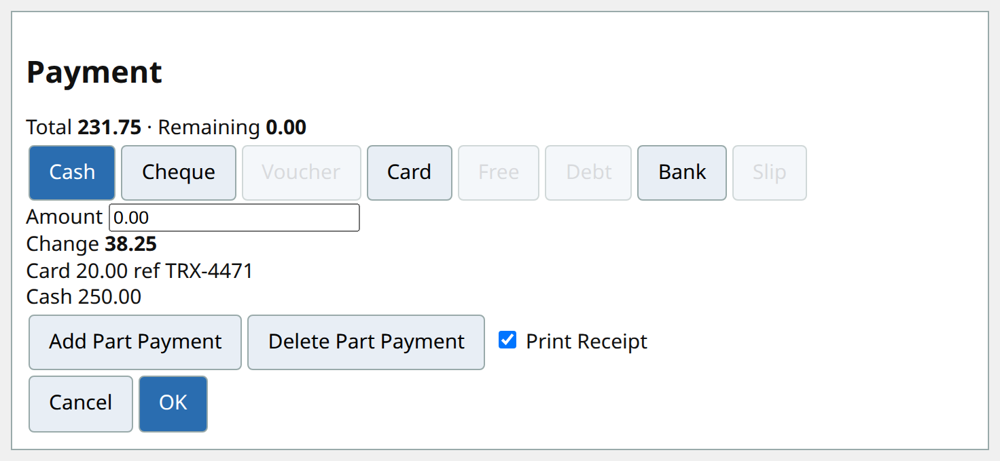
- Tick or untick Print Receipt, then OK. The sale is saved on the device and the Receipt screen opens.
- If the first tender was cash and there is change, a Change pop-up shows the amount. Tap OK to return.
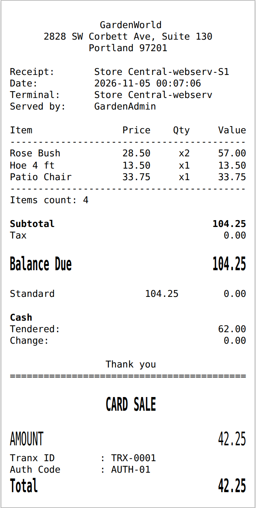
The receipt is laid out exactly as uniCenta's standard ticket (Printer.Ticket.xml), on a fixed 42-character grid in a monospace font, black on white in both themes. Top to bottom:
- Header: the logo (when the company has one), then up to six centred lines: the company name, address, tax id, phone, e-mail, or the header lines typed in Configuration. With neither, the receipt starts at Receipt:.
- Receipt: (or Refund:) the ticket number, Date:, Terminal:, Served by:, and Customer: / Table: when the ticket has them.
- Item grid: a heading Item / Price / Qty / Value, a dashed line, one row per ticket line (the name is cut at 17 characters, price, x quantity and value right-aligned), a dashed line, then Items count:.
- Totals: Subtotal, Tax, a large bold Balance Due, then one row per tax with its base and tax amount. Line values are before tax; the tax is worked out once for the whole ticket, so Subtotal plus Tax always equals Balance Due to the cent.
- Tenders: cash shows Tendered and Change; cheque and bank show their amount.
- Footer: your footer line 1 centred, an
=rule, then footer lines 2 to 6. - Card block (card sales): CARD SALE, the amount, the terminal's Tranx ID and Auth Code, and the card part of the total. No card number is ever printed.
Tap Print on the Receipt screen to print it on an 80 mm roll (or save it as a PDF of the same width) through the browser's print dialog. Reprint Last Ticket and Reprint Ticket open the same receipt, so the same Print button applies.
Holding tickets and quick log-off¶
- Add New Ticket keeps the current ticket (if it has lines) and opens an empty one.
- Tickets awaiting completion lists the held tickets; tap one to recall it (a recalled ticket is removed from the list).
- Quick LogOff holds the current ticket and returns to Login.
- Delete asks "Are you sure you want to Delete the current Order?".
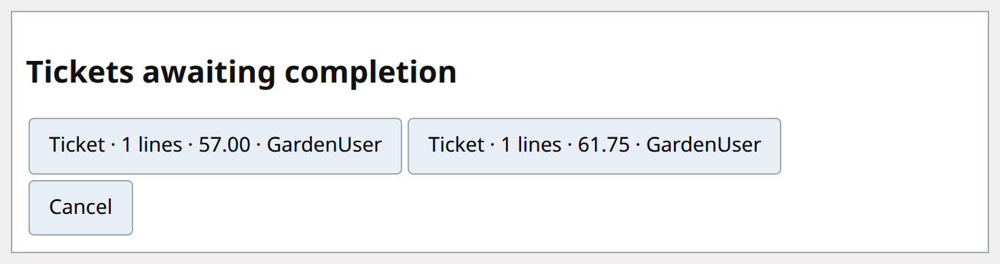
Reprinting¶
Reprint Last Ticket reprints the last ticket of this till. Reprint Ticket lists the tickets of this till; tap one.
Finding and editing a past ticket; refunds¶
- Register menu → Edit Sales. Choose Sales or Refund, type the ticket number and press Find, or press Finder to list them and tap one.
- Print reprints it. Edit reopens the lines on the Sales screen and saves under the same ticket number.
- Refund opens a list of the original lines: Add the lines to refund (or Add all lines), then Refund. The Sales screen shows a refund ticket; = pays it with the Refund / Cheque / Card tabs.
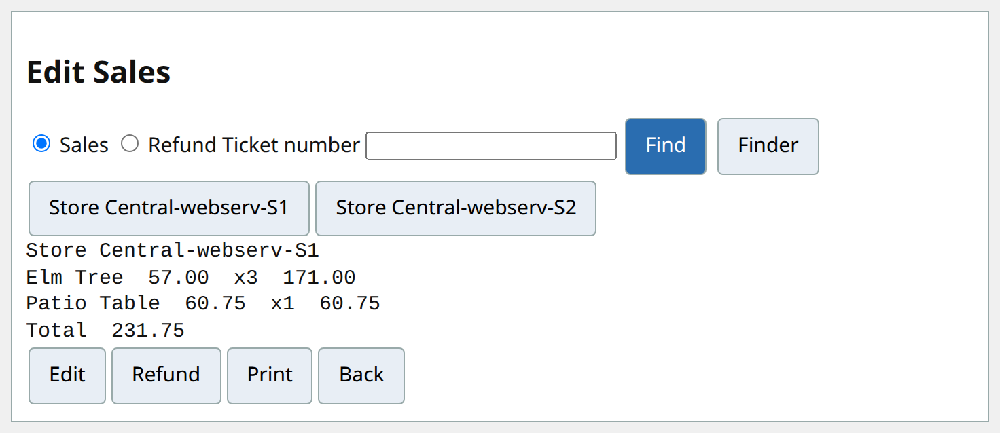
The buttons switch on and off by rule, and the line under the ticket says why:
| Situation | What the screen says |
|---|---|
| Already refunded | This ticket has been refunded (Edit and Refund off) |
| The ticket is itself a refund | A refund ticket (Edit and Refund off) |
| Sold in a shift that has since been closed | Closed cash: Edit is not available |
| Already sent to head office | Already sent to head office: use Refund |
Customer Payment¶
Register menu → Customer Payment → type a name or key → Find → tap the customer. The card shows Name, Credit Limit, Current Debt; Amount starts at the current debt. Pay opens the Payment dialog (Cash, Cheque, Bank, Card live). A customer payment is a payment row with no sale lines; head office imports it with Import Payment, not with Import POS Sales.
Cash in / cash out, vouchers, check in, pick-up numbers¶
- Payments: choose Cash (In) or Cash (Out), type the amount and notes, Save. Cash out is stored negative and both show in the shift's Close Cash totals.
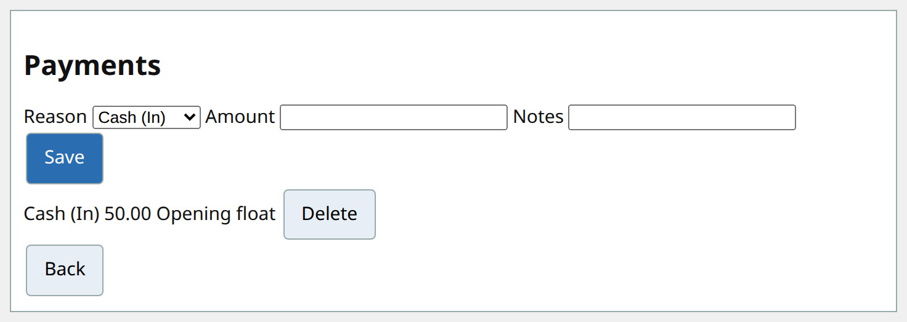
- Voucher: Issue a numbered voucher (V000001...) for a customer and amount, or Redeem a number ("No such voucher" / "Voucher already used" / "Voucher redeemed ..."). It is a ledger on this till only.
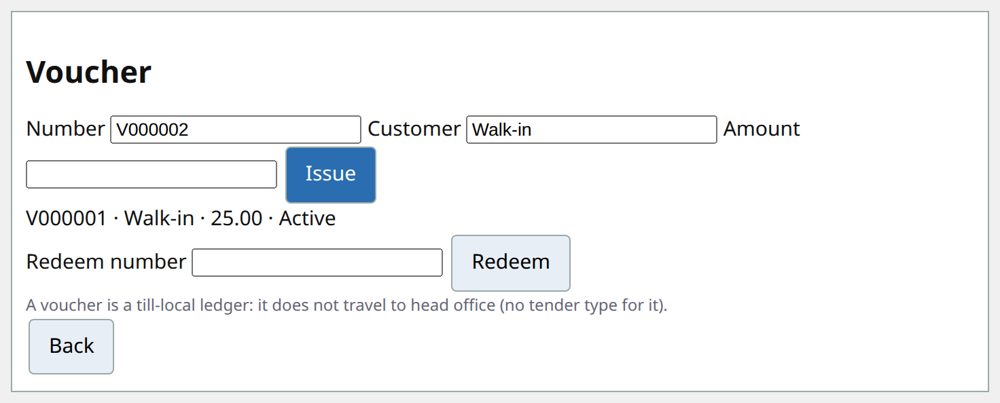
- Check In/Out: Check In / Check Out for the signed-in user; the line shows "name has Checked In at ...".
- Pickup Reset: shows the next pick-up number. Reset asks "Do you really want to reset the Order Pickup number to 0?". Pick-up numbers are given at the first Send Order or sale of a ticket that has no table.
Product pictures¶
Each product tile shows the product's picture with its name and price over the bottom of it. Where it comes from:
- The picture is a web address in the product's Image URL field (
M_Product.ImageURL). The picture file itself sits in the shared object-storage bucket (.../b/bim-ootb/o/erp/product-icons/<name>.svg), never inside the till's database. - A head-office clerk sets it with the ordinary Product edit (Image URL field). The change reaches the tills in the morning SODA batch (see The branch POS admin): a changed Image URL travels like a changed price, and an unchanged one never travels.
- A product with no Image URL shows a grey "no image" mark and its name. The shipped demo data carries no pictures until the head-office edit is made.
- The tile size is the branch's setting (default 107 x 60), set at the branch POS admin.
Offline. The pictures are kept in the browser's own picture cache on the device's disk (erp-media-v1), not in memory
and not in the till's database. When the till starts online and the products have Image URLs, it fetches only the pictures it
does not hold yet and drops pictures whose product is gone or whose address changed; the cache is capped at 50 MB. A software
update does not empty it. So a picture shows offline only if the till loaded it online at least once; a tile whose picture was
never fetched shows the "no image" mark. The till logs §TILL_MEDIA with the file count.
Restaurant mode¶
Set Tickets = restaurant in Configuration (below) and restart, or open till.html?mode=restaurant. Sales then opens
the floor map: one tab per floor, one button per table. A table with an open ticket is shaded and shows the waiter, the table
name and seats, Guests and Waiting. The floor is drawn as uniCenta's 960 x 600 plan: each table is drawn from its own record (round when its width equals its height, otherwise a rectangle) with one chair per seat, and an open table shows the people icon. With Transparent table button ticked in Configuration, the floor's own picture is used instead and the tables are invisible buttons over it. Reload, Reservations and Tables are on the sales screen.
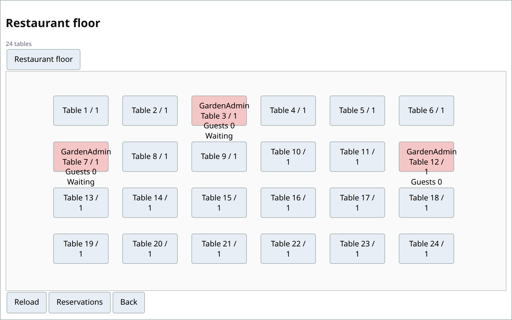
- Who sets up floors and tables: the branch POS admin (Floors, Tables and till settings, below), as uniCenta's back office does. Until it sets any, the till shows uniCenta's seed floor of Table 1 ... Table 24 (nothing is written for it).
- Open tables are shared by the whole branch. Tap a table to open or recall its ticket; while you work on it the table is locked to your till. Another till that taps it is told "Table is in use by till" and cannot open it.
- Saving. The ticket is saved when you leave the table (back to the map, or Tables), not on each tap: one save and one branch update. Taps inside the table cost nothing.
- On a table's sales screen the controls are uniCenta's: Tables (back to the map), Move, Guests and Delete.
- Guests opens Enter Number of Guests; the button then shows the count, and it is saved with the table when you leave it.
- Move: the ticket is saved and the map says Moving table N. Select another Table or the original Table. Tap a free table and the ticket moves there. Tap an occupied table and the till asks Merge Tables: This will Merge tables. Are you sure you want to do this?; Yes adds the lines and guests to that table and clears the first, No returns to the original table. Tapping the original table cancels the move.
- Delete (Delete Current Order): when the branch has an override PIN (set at the branch admin) the till first asks Enter PIN Number; a wrong PIN says PIN Number Incorrect and deletes nothing. Then Are you sure you want to Delete the current Order?; Yes clears the table.
- A table another till is using can be taken over the same way: tap it, and when the branch has a PIN the till asks Enter PIN Number.
- Reservations. Reservations → Select Person, Persons, Booking Time, Notes → Save. The reservation has no table yet. At check-in, choose the table in the Table list (the first entry is "(table at check-in)") and press Check-In Now: that table opens for the customer. A reservation is Done afterwards. Reservations stay in the branch and are not an ERP record.
- Floors, tables and reservations never go to head office.
Configuration and the display modes¶
Press the gear button on the status strip. The Configuration screen has five tabs, as in uniCenta: General, Locale, System Options, Ticket Setup, Company. Press Save; a changed Tickets mode applies at the next start.
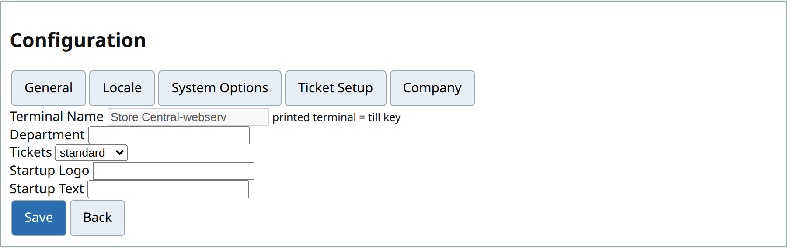
- Look and Feel (General) chooses the till's colours: Classic (2011), the default, takes the colours of the original 2011 screen, or Modern, the till's earlier look. The choice is this till's own and is kept across restarts; the product pictures and the layout do not change with it.
- Tickets (General) is the display mode: simple, standard (the default, the sales screen above) or restaurant (floor map and
reservations). An address option
?mode=restaurantstill forces restaurant. - Per device (this till's own settings): Department, Startup Logo and Text, auto log-off after a sale and its timer, the table-plan colours and refresh, the 00 key, the input box above the keypad, pick-up number length, receipt print off, and the receipt Header 1-6 / Footer 1-6 / logo path.
- Grey (read only), with a note beside them: Terminal Name is the till key; the Locale formats come from the branch client so every
till of a branch prints the same receipt; Auto log-off timer and Allow price updates are the branch's
C_POSsettings, edited in the ERP; Use Override? and PIN are set at the branch POS admin. - Enable Service Charge exists on the screen but stays off, as uniCenta 5.0's default (the button is not on the ticket bar).
The kitchen¶
Sending an order¶
- On Sales, ring the lines and tap Send Order. Every sale line of the ticket goes out as one new generation of the order (discount lines and zero quantities are not kitchen lines).
- The order's name is the table if the ticket has one, otherwise the pick-up number, given on the first send.
- The till says "Order n sent to the kitchen" and shows a Kitchen: waiting chip on the ticket bar.
- Send again after changing the ticket: the new send replaces the old one on the kitchen screen. Sending an empty ticket after an earlier send tells the kitchen the order was cancelled.
- When the kitchen marks the order done or void, the till shows "Kitchen: order n is READY" or "...is VOID" once,
and the chip changes. While an order is waiting, the till checks for news every 10 seconds
(
?poll=<seconds>on the till URL changes it).
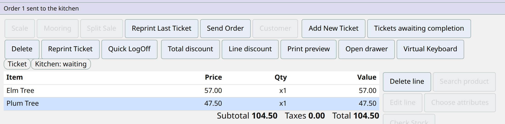
Send Order only works on a sale ticket ("Send Order is for a sale ticket").
The kitchen screen¶
Open https://red1oon.github.io/bim-ootb/erp/kitchen.html on the kitchen's own device (set it up as in the next section). Each waiting order is a card: order name and a running clock (MM:SS) on top, the lines below, Bump and Void at the bottom.
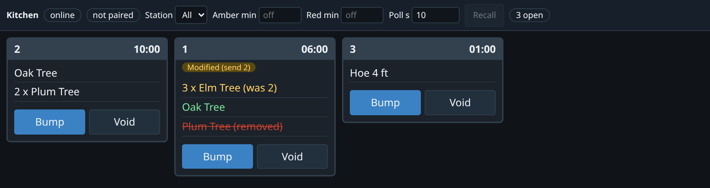
| What you see | Meaning |
|---|---|
| Bump | The whole order is done; the card leaves the screen and the till is told READY. |
| Void | The whole order is void; the till is told VOID. |
| Tap a line | Crosses that line off (done). Tap again to undo. |
| Modified (send N) | The till re-sent the order. Lines in green are new, amber "(was n)" changed quantity, red struck-through "(removed)" were taken off. |
| Cancelled by the till | The till sent an empty ticket after an earlier send. |
| Recall | Brings back the most recently bumped or voided card. Grey when there is none. |
| N open | How many cards are waiting. |
| Station | Filters by station. The till sends every line to station 1. |
| Poll s | How often the kitchen looks for news (default 10 seconds). |
Elapsed colours: off until the branch sets them¶
The card header colours by waiting time only when both Amber min and Red min are filled in. Blank boxes (placeholder "off") mean no colour, and nothing is assumed. With, say, 5 and 8: green until the 5th minute, amber from the 6th, red from the 9th (whole minutes over the limit). The two numbers are saved on that kitchen device.
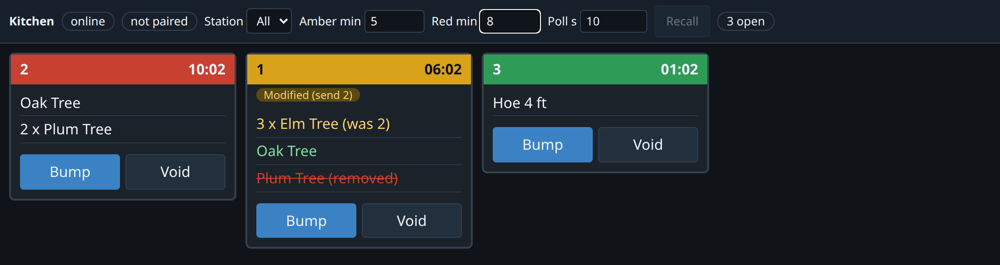
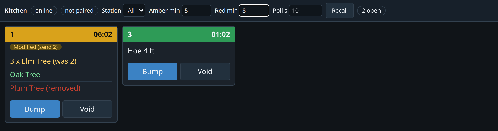
The kitchen orders and their done / void marks are branch-local: they go only to the till and kitchen devices of that branch Org. They are not legacy tables and head office does not read them.
Setting up a till and a kitchen screen (branch manager)¶
Each till and each kitchen screen is a Team device of the branch's Org. You need a head-office (or manager) device that starts the team, and a device for each till and kitchen screen.
- Start the team (once, on the head-office device). Open the ERP page. Press the Team pill (two-heads icon, in the ⋯ rail). If it says Turn on team mode, press it; the page reloads. Under Kind of team choose Point-of-sale team, then press Start a team. Copy the invite link.
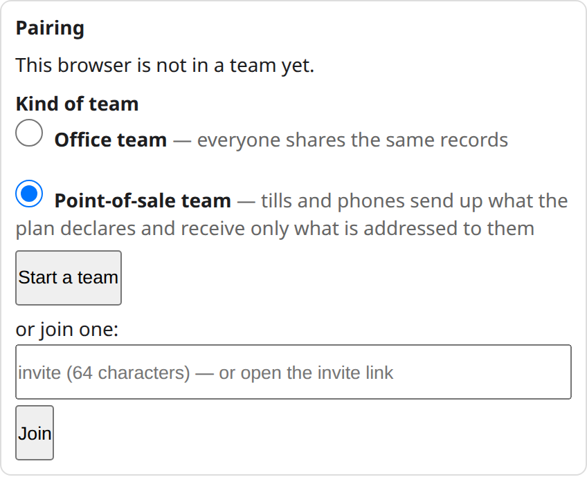
- Join, on the till's own browser. Open the ERP page there, press the Team pill, paste the invite (or open the invite link) and press Join. The device shows a device code and "Waiting for approval".
- Approve, back on the head-office device. Team pill → Check join requests → match the device code → choose the role Web Service Execution (50004) → Bound to = the branch Org (for example Store North) → Approve. If Bound to is left empty the panel refuses: "Choose what this device is bound to first".
- Visit on the joining device (Team pill → Visit, or Visit head office on the till page).
- Open the till —
.../erp/till.htmlon that device. The strip should say paired. The till's station (price list, Org, warehouse) is the tenant's first POS station (c_pos); its name is the Org key and the Team station user, for exampleStore Central-webserv, and that name is the prefix of every ticket number. - Kitchen screen: repeat steps 2-4 on the kitchen's device (same role and the same Bound to Org), then open
.../erp/kitchen.html. Set Amber min / Red min if the branch wants colours. - Branch POS admin: repeat steps 2-4 once more on the branch manager's device (same role, same Bound to Org), then open
.../erp/branch_admin.html. Every till must be paired to the same branch Org: Close Cash hands the shift to this device. See The branch POS admin. - Test: ring one sale, press Send Order, watch it appear on the kitchen device, press Bump, and watch the till say READY.
Both pages pass the address options login=, pipe=, xcfg=, teamplan= on to their built-in ERP engine, so a till can use another Team
station user with ?login=.
Shifts and Close Cash¶
A shift is numbered from 1 on each till and stays open until Close Cash.
- Register menu → Close Cash. The page shows the Z for the open shift, read from the tickets of this shift: Sequence, Start Date, End Date, Transactions, Units, Sales, Cash/payments, By tender, Net, Taxes, Lines removed, No Sale - Drawer Openings. Print refreshes it.
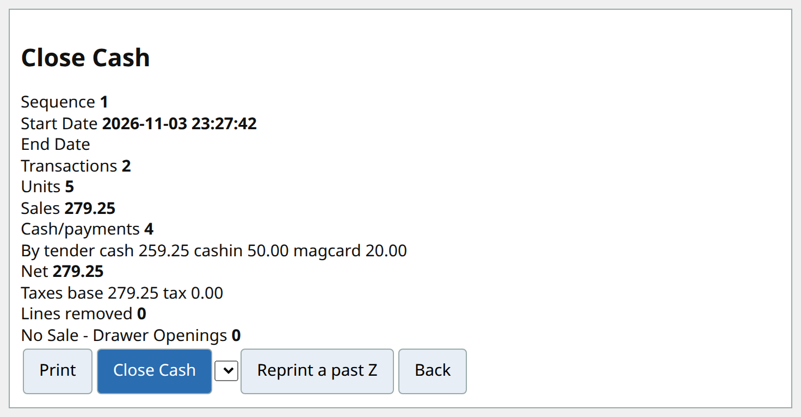
- Press Close Cash, then confirm with Yes, close the cash.
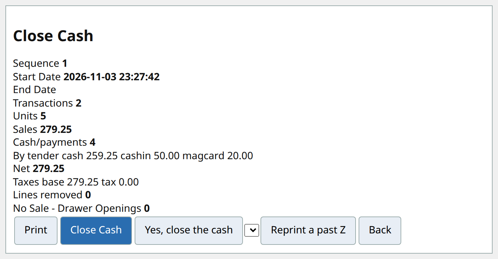
- The page says Cash Closed OK and a new shift starts. A past Z can be reprinted from the drop-down and Reprint a past Z.
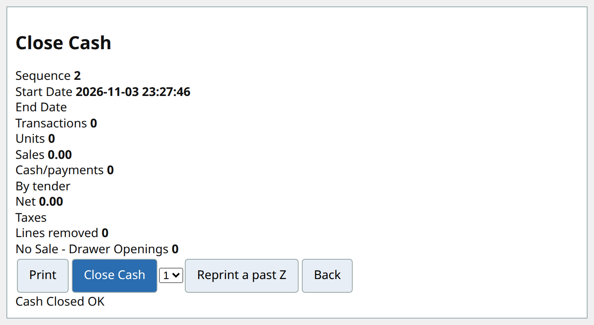
Where the shift goes. Close Cash writes the shift's tickets (their import rows) and one Z declaration as a hand-off to the branch POS admin, then makes one Visit on the branch's own channel. A till never sends anything to head office: its import rows are held on the device. The branch POS admin gathers every till's hand-off and sends the branch's day to head office as one batch (see The branch POS admin). A manual Visit head office or a Send Order is still a Visit, but it only exchanges with the branch (kitchen, price updates passed on by the admin), never ticket rows with head office. Offline, keep selling; the next Visit carries everything once.
What never leaves the till¶
These live only in that till's browser, because legacy has no import shape for them:
- Payments cash in / out, the Voucher ledger, Check In/Out, pick-up numbers and their reset;
- restaurant floors, tables and reservations (they are shared inside the branch, never sent to head office); held tickets; the drawer-opening count and the removed-lines audit;
- discount lines as separate lines (they are folded into the product line's price);
- links beyond the "Refund of number" line note; the closed-shift list and past Z records (re-derived on the till from the sale rows).
The Z declarations go to the branch POS admin, and head office reads the branch's totals from the admin's statement (see Day Close below). Clearing the browser's site data on a till loses these local items. The sales themselves are in the device's engine, and numbering resumes after the highest number already deposited.
The branch POS admin¶
The branch POS admin (erp/branch_admin.html) is uniCenta's back office for one branch. It is a page of its own on a Team device
bound to the branch Org (not a till mode). It reads what every till of the branch handed over at Close Cash, shows the end of day, and makes the
branch's one send to head office. The rhythm is EODA (end of day, branch to head office) then SODA (start of day, head office to branch):
nothing trickles during the day.
The EODA screen: Send EODA and Send status now¶
- Open
branch_admin.html. The strip shows online/offline, paired, and the branch Org. Choose the Business day. - Tills lists the expected till keys (type them comma separated); tills that handed over a shift are added as well. Press Refresh.
- The table has one row per till: State (closed after a Close Cash for that day, otherwise open), Tickets, Series (first..last and count for sale, refund and customer-payment numbers), Gaps (numbers missing between 1 and the highest), Z by tender, Z by tax, Gross; a Branch total row closes the table.
- Send EODA is enabled when every till is closed. If a till is still open it needs an Override reason (type it first); the reason is stored with the batch. One press assembles every not-yet-sent ticket's import rows plus a statement of the Z totals each till declared, and makes one Visit to head office.
- Send status now is the same send marked partial, for an intense period. It is only a pressed button, never timed. A later EODA includes everything, so nothing is doubled; head office judges the latest batch of the day, and imports a partial one only if the clerk ticks IncludePartial in Branch Day Close.
Limit: a second shift of a till that already closed once is not visible to the admin.
SODA: prices, products, and Receive stock¶
In the morning, head office's SODA batch (process FO_Branch_SODA, run after Branch Day Close) writes one batch for the branch. The admin's SODA line says
how many prices, products and taxes arrived ("n batch(es): ...").
- Pass prices to tills hands the batch rows to the tills, in one Visit. A till applies a row only if it arrived; only price changes travel, and old prices stay. A changed product row (name, key, barcode, picture address, category, tax category) travels the same way; unchanged rows never do.
- Receive stock is the branch's Move Confirmation of the in-transit stock movement head office sent (replenishment). The button shows "n movement(s) to receive"; pressing it opens the movement's lines, as legacy's Move Confirmation window shows them: Move Line, Product, Target Quantity, Confirmed Quantity, Difference and Scrapped Quantity. Confirmed starts at the target and Scrapped at 0 (a full receipt). For a short receipt type what arrived and what was scrapped; Difference is worked out for you (target - confirmed), as legacy does. Example: target 5, confirmed 3, scrapped 1 gives difference 2. Press Confirm receipt. The receipt is kept and goes up inside the next EODA, never as a send of its own; head office then completes the movement and the difference documents.
Floors, tables and till settings¶
Under the EODA table, Floors, tables and till settings edits (all kept at the branch, never sent to head office): Add floor (name, optional background image address), Add table (name, floor, seats, X, Y, width, height), and the catalog tile width / height, category panel height and the override PIN (Save settings). The tills pick these up on their next Visit.
Head office¶
Everything below is opt-in. Until the plugins are started, the ERP menu is exactly the legacy menu.
Switching it on (System Administrator, once)¶
- Sign in with tenant System → SuperUser.
- Open the ⋯ rail and press the plug pill — Plugin Engine.
- POS integration (
org.kernel.pos-integration) is listed as INSTALLED but not started. Press Start. - Under Friendly operations press Install — this adds Branch Day Close.
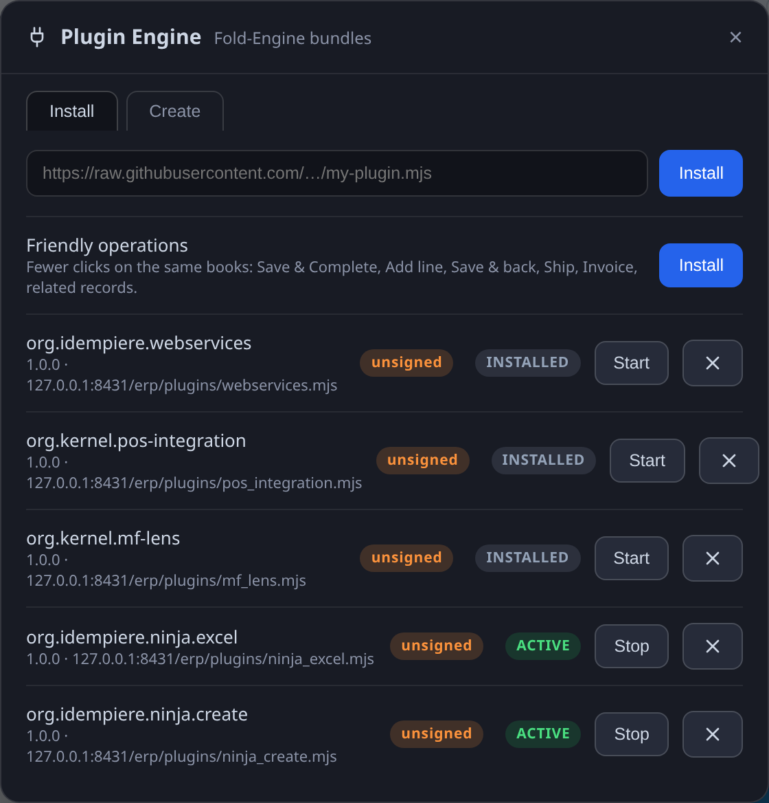
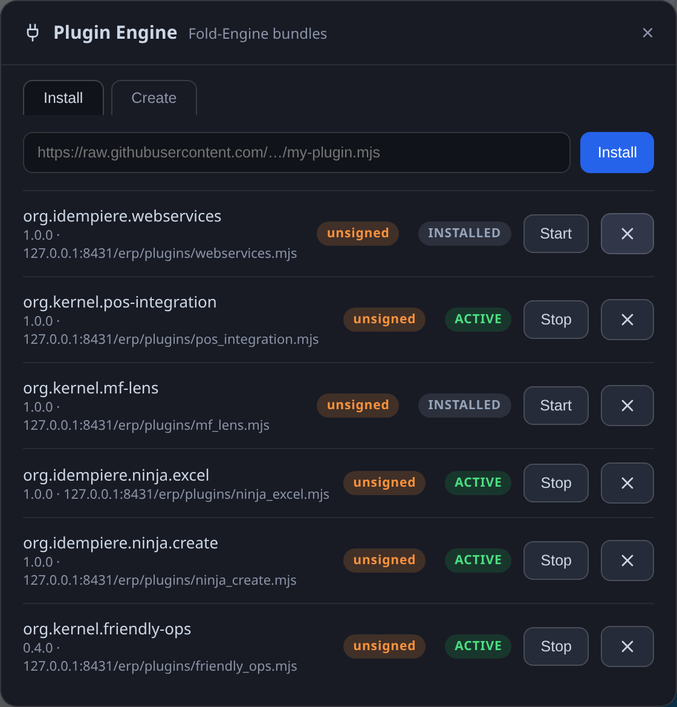
Stop on a bundle removes everything it added. The plugin rows (menus, processes, access) are visible to the System Administrator and the GardenWorld Admin role, which is the head-office clerk. No other role gets them.
Import POS Sales¶
Menu → Data Import:
- Import POS Sale (a read-only window): one row per till ticket, with Ticket No, Business Partner Key, Date Ordered, Lines, Tenders, Lines Total, Tenders Total, Difference (Tenders - Lines), Imported, Import Error Message, Order. A mismatch shows here before you import. On a price list that excludes tax the Difference is the tax; the exact check is done by the import.
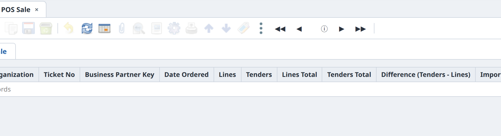
- Import POS Sales (the process): Tenant, Organization, Bank Account (required), Ticket No (one ticket only).
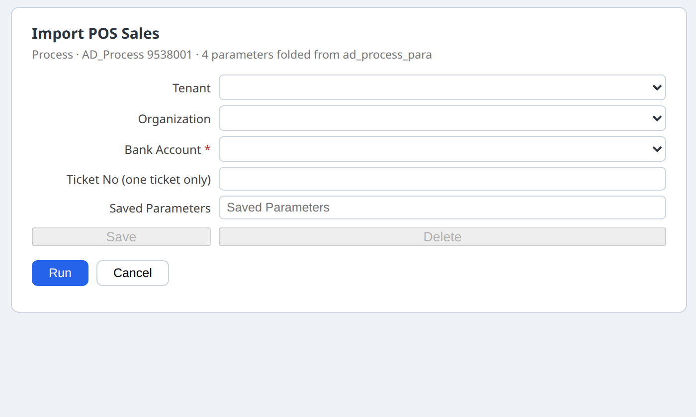
Each ticket is imported all or none: legacy Import Orders makes one completed order and its invoice; the tenders must equal the invoice total to the cent; legacy Import Payment makes the completed receipts on that invoice; then the invoice must be paid. Any failure rolls the whole ticket back, marks its rows with an error and the reason, and leaves it for you to correct and run again. A customer payment (no lines) is refused here ("no ticket lines"); import it with Import Payment.
Products with a BOM¶
When a till sells a product that has a Bill of Materials, head office explodes it when it imports the sale, as legacy iDempiere does: the order gets a comment line and the component lines (quantity multiplied), and the components leave stock, not the parent. It goes one level only: a BOM inside a BOM stays a priced line, as in legacy. The component prices at head office must add up to the till's price for the parent, or the ticket is caught by the tender check. A BOM sold from stock (production route) is not covered.
Company details and logo (head office)¶
The till shows the company's name, address, tax id, phone and e-mail, and its logo, in three places: the About screen, the name beside Till on the status strip, and the top of every receipt. They are not typed at the till: they come from the ordinary legacy records of the till's own branch organisation, and travel in the morning SODA batch like a price.
- Name: the organisation's name (Organization window). Address: the Location of Organization Info. Tax id, phone, e-mail, receipt footer: Organization Info.
- Logo: in Organization Info choose an Image whose Image URL is the picture's web address (for the shared bucket:
https://objectstorage.ap-kulai-2.oraclecloud.com/n/ax3cp6tzwuy2/b/bim-ootb/o/erp/<your-logo>.png). Only the web address travels; the picture itself is fetched once and kept on the till's disk like the product pictures, never in the till's database. With no logo set, the screens show the first letter of the company name. - Change a detail, save, and it reaches the branch's tills with the next SODA batch. A detail that did not change is not sent again.
- Header lines typed in Configuration → Company replace the company lines at the top of the receipt, as in uniCenta (its header lines are the cashier's own text).
- The GardenWorld demo tenant has no logo set, so its tills show the letter placeholder until one is set.
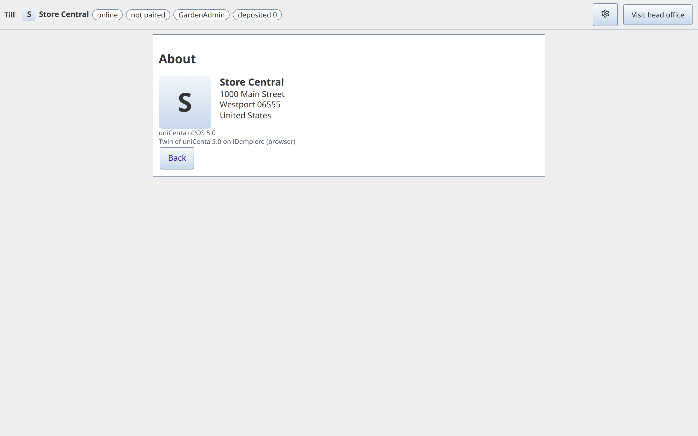
Product pictures and prices (head office)¶
Set a product's picture in the ordinary Product window (Image URL), and change prices in the price list as usual; the next SODA batch carries them to the branch. Import Product can create new products with their Image URL, but, as in legacy, it does not change the Image URL of an existing product: use the Product edit.
Branch Day Close¶
Menu → Data Import → Branch Day Close. One run closes the business day for one branch (Organization) or several (Branch Orgs, comma-separated Org ids; leave both empty for every Org that has pending till rows).
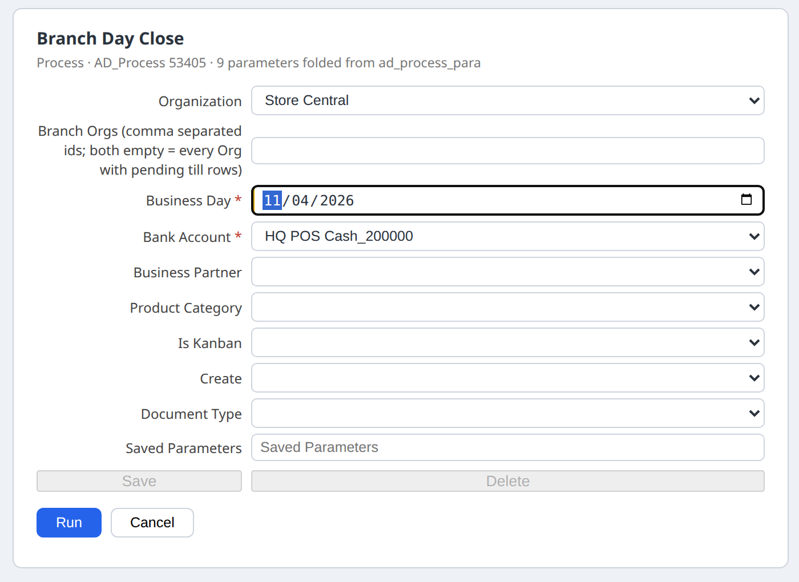
| Parameter | Use |
|---|---|
| Organization / Branch Orgs | which branch(es) |
| Business Day (required) | the date of the tickets |
| Bank Account (required) | needed by Import Payment |
| Business Partner, Product Category, Is Kanban | the Replenish Report's own filters |
| Create (Inventory Movement / Production / Purchase Order / Requisition), Document Type | only if you want the replenishment documents made |
It runs, in legacy order and stage by stage over the branches: 1. Import (Import POS Sales per cleared ticket), 2. Replenish Report for each warehouse of the branch, 3. the replenish create only if you chose Create ("SKIPPED not requested" otherwise). Each step is reported on its own line. A failing step stops the whole close, is named with its branch, and earlier steps stay.
Where the rows come from. They arrive in the branch's EODA batch (one per branch, from its POS admin). Day Close checks that batch against the statement the admin sent with it (below). A partial status batch is withheld unless IncludePartial is ticked.
The audit gate. Before importing, each till and day is checked on what head office really holds:
- Gaps: a till numbers its tickets from 1, so a missing number (S2 absent between S1 and S3) means a ticket never arrived.
- Balance: each ticket's tenders must equal the total the till itself computes (tax included or excluded, following the price list).
- Statement: when the EODA statement is present, per till and day the count and first/last number of each series, and the gross, net, tax, tax-by-id and tender totals
recomputed from the rows at head office, must equal what the till declared. A till with rows but no statement line is withheld too. Reasons are named
(
statement-count,range,totals,undeclared,partial). With no statement at all (an old direct send) only the first two checks run.
A till/day with a gap or an unbalanced ticket is withheld whole: none of its tickets are imported, it is named ("WITHHELD: gap S2" / "unbalanced ... expected=55.00 tenders=54.99"), and the other tills still close. The Z is checked only through the branch statement. Customer payments are named and left for Import Payment. A branch with nothing pending for the day is skipped, so running the close twice makes nothing new.
If POS integration is not started, the close falls back to Import Orders + Import Payment. Those cannot be limited to single tickets, so the close is blocked (nothing imported) whenever a till was withheld or other days or branches are pending; start POS integration for per-ticket control.
Under the hood¶
- A ticket number is
<Org key>-<till user key>-<S|R|P><n>: S sale, R refund, P customer payment, n counting from 1 per series. It is theDocumentNoof every row of the ticket. - Rows sent per ticket:
I_Order(one per product line: product, quantity, price actually paid, unit, date, shift tag "POS shift till/seq") andI_Payment(one per tender applied: amount, tender type, date, same shift tag). Over-payment is change and is never deposited. - Tender map: Cash →
X, Cheque →K, Card →C, Bank →A. Card rows carry the terminal reference and approval code, never the number. - Refunds: negative quantity and negative payment under an
Rkey, with "Refund of original number" on the line. - Prices and taxes come from the ERP's own price list and tax functions; the till holds no tax formula.
- Kitchen: two branch-local tables (kitchen order, kitchen status). The till and kitchen look at the branch's shared box with one cheap list request per poll and run a full Visit only when another device wrote.
- Hand-off and batch: the till writes
POS_TillHandoffrows (tickets and the Z) for its branch admin; the admin writesPOS_BranchDayStatementrows and the realI_Order/I_Paymentrows to head office. Floors, tables, reservations and picture settings are branch-local rows, never sent up. - Same twin rule as the ERP: where uniCenta 5.0 and legacy iDempiere disagree on what can be sent, legacy wins, which is why four tenders are disabled.
Troubleshooting¶
| What you see | Meaning and fix |
|---|---|
| That discount takes the line under its price limit; head office would refuse the ticket (also "...takes a line under its price limit...") | The discounted price is below the price list's limit. Use a smaller percentage. |
| Select a line and type the discount % first | Select a line, type the percentage digits, then press the discount button. |
| Enter an amount | Type an amount before Add Part Payment / Save / Issue. |
| Only cash gives change: the amount is more than remaining | Over-tender is allowed on Cash only. |
| Card: the terminal reference and approval code are needed (the card number is never keyed here) | Key both from the card terminal. |
| The ticket is already covered / The ticket is not covered yet: Add Part Payment | Remaining must be zero before OK. |
| This tender is not in this release | Voucher, Free, Debt, Slip are disabled (no legacy tender type). |
| A free-price or negative line has no legacy import mapping in this release (Import Orders needs a product) | Ring a real product instead of a typed price. |
| ... - no such product | The barcode or key matches no product on the till's price list. |
| A refund takes lines of the original ticket (Edit Sales, Refund) | On a refund ticket you cannot add products. |
| Add at least one line to refund | Tap Add on at least one line. |
| The ticket does not exist | Wrong number or series (Sales / Refund). |
| Could not save the sale on this device: ... | The device engine refused the save. Nothing was sent; retry. |
| Send Order is for a sale ticket / Nothing to send | Open a sale ticket with lines. |
| Could not send the order: ... | The kitchen row could not be saved on this device; retry. |
| Kitchen shows no cards | Till and kitchen must be paired to the same branch Org; press Visit. |
| Cards have no colour | By design until both Amber min and Red min are set. |
| Table: Table is in use by ... | Another till of the branch has the table open (locked). Wait until it leaves the table. |
| Reservation: Choose a table in the list, then Check-In Now | Pick the table in the Table list first. |
| Tile shows a grey "no image" mark | The product has no Image URL, or the picture was never fetched while online. |
| Admin: Not every till is closed: give an override reason to send | A listed till has not closed its shift; close it or type a reason. |
| Admin: No till has closed a shift for ...: nothing to send | No hand-off for that business day. |
| Admin: Send EODA greyed | An open till and no override reason typed. |
| Admin: Could not hand the shift to the branch admin (on the till) | The shift hand-off was not saved; nothing was lost, press Close Cash again after fixing. |
| Visit failed: ... | No connection or no pairing; keep working and press Visit head office later. |
| Strip says not paired | The device has not joined or is not approved yet (see Setting up). |
| Team panel: No key: open the Team panel and use the system default, or save your own repository and key | The team's relay key is missing on this browser; use the system default or save your own repository and key. |
| Choose what this device is bound to first: ... | Pick the branch Org in Bound to before Approve. |
| Import row error ERR=no tenders: ... | The ticket has lines but no payment rows. |
| ERR=Tenders total X <> invoice total Y | The tenders do not add up to the invoice; correct the rows and run again. |
| ERR=Import Orders imported n of m ticket lines | Some lines refused (product, price limit...); the reason follows. |
| Day Close: WITHHELD: gap ... / unbalanced ... | A till/day failed the audit gate. Find the missing ticket or fix the tender, then close again. |
| Day Close: STOPPED at step "..." (Org ...) | The named step failed; earlier steps stay. Fix the reason and run again. |
| Day Close: BLOCKED, nothing imported | POS integration is not started and the gate held a till or other days are pending. |
| Branch Day Close: nothing pending for ... | No unimported till rows for that day. |
| Branch Day Close not in the menu | Friendly operations is not installed (see Switching it on). |